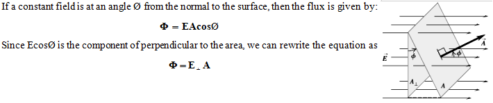
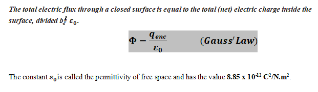
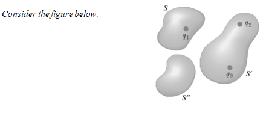
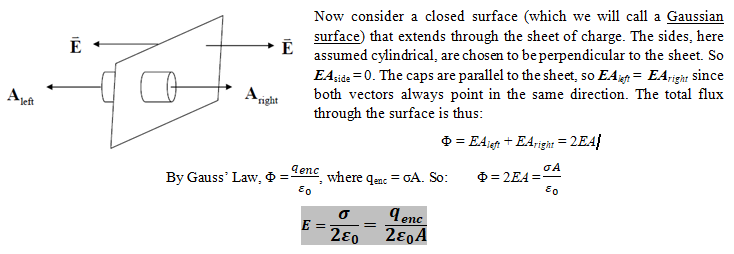
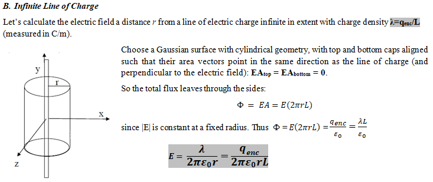
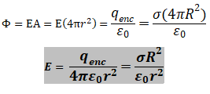
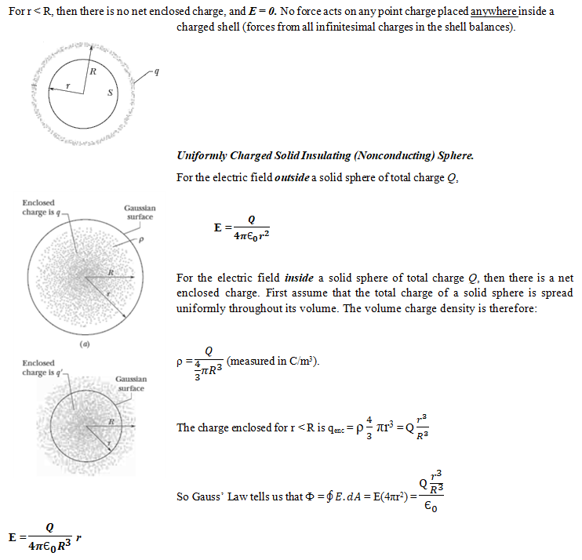
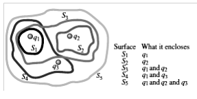

Gauss' Law
-
Electric Flux (Φ)
- Electric flux is the measure of flow of the electric field through a given area. It is proportional to the number of electric field lines going through a normally perpendicular surface.

- 
- Gauss’ law relates the net flux Φ of an electric field through a closed surface (a Gaussian surface) to the net charge qenc that is enclosed by that surface. It tells us that
- 
- 
- The net electric flux through any closed surface depends only on the charge inside that surface. The net flux through surface S is q1/ε_0, the net flux through surface S’ is (q2+q3)/ ε_0, and the net flux through surface S” is zero.
-
Applications of Gauss’ Law
A. Infinite Sheet of Charge
- Let’s calculate the electric field from an infinite sheet of charge, with a charge density of σ = qenc/A (measured in C/m2).
- 
- Vector Addition uses special methods which are not arithmetic. The particular method used depends on the orientation of the vectors and how many vectors are being considered.
B. Infinite Line of Charge
- Let’s calculate the electric field a distance r from a line of electric charge infinite in extent with charge density λ=qenc/L (measured in C/m).
- 
C. Spheres of Charge
- Let’s calculate the electric field a distance r from a line of electric charge infinite in extent with charge density λ=qenc/L (measured in C/m).

- Since |E| is constant at a fixed radius, the total flux through the surfce is:
- 
- The situation changes for the electric field inside a spherical shell or conducting solid sphere.
- 
- Electric field of various symmetric charge distributions: The following table lists electric fields caused by several symmetric charge distributions. In the table, q, Q, λ, and σ refer to the magnitudes of the quantities.
Charge Distribution Point in Electric Field Electric Field Magnitude Single point charge q Distance r from q Infinite sheet of charge with uniform charge per unit area σ Any point Infinite wire, charge per unit length λ Distance r from wire Charge q on surface of conducting sphere with radius R Outside sphere, r > R
Inside sphere, r < RSolid insulating sphere with radius R, charge Q distributed uniformly throughout volume Outside sphere, r > R
Inside sphere, r < R -
Sample Problems
- 1. A flat sheet of paper of area 0.250 m2 is oriented so that the normal to the sheet is at an angle of 600 to a uniform electric field of magnitude 14N/C. Find the magnitude of the electric flux through the sheet.

- 2. You measure an electric field of 1.25 x 106 N/C at a distance of 0.150 m from a point charge. There is no other source of electric field in the region other than this point charge. (a) What is the electric flux through the surface of a sphere that has this charge at its center and that has radius 0.150 m? (b) What is the magnitude of this charge?
- 3. The three small spheres shown in carry charges q1 = 4nC, q2 = -7.8nC, and q3 = 2.4nC. Find the net electric flux through each of the following closed surfaces shown in cross section in the figure: (a) S1; (b) S2; (c) S3; (d) S4; (e) S5.
- 